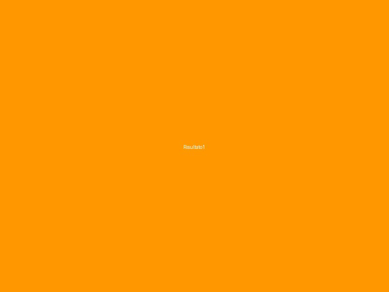
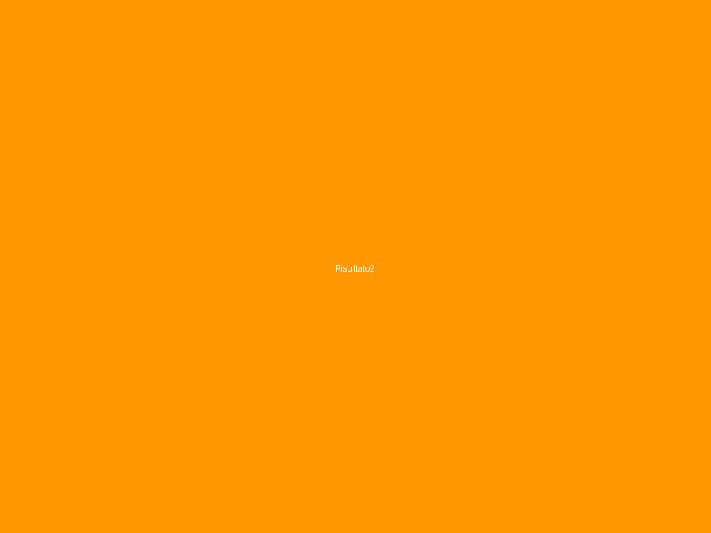
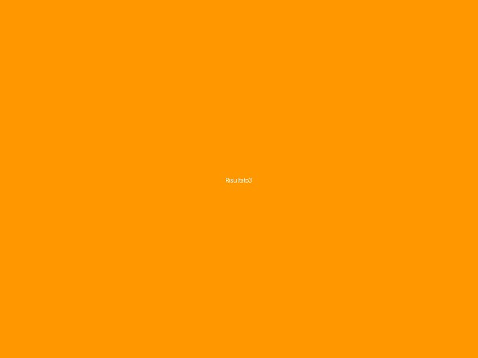

Cosa Abbiamo Realizzato
Durante il progetto abbiamo raggiunto importanti traguardi che hanno avuto un impatto significativo sulle comunità coinvolte. I nostri risultati sono stati misurati, documentati e verificati.
Risultato 1: [Titolo]
Descrizione dettagliata del primo risultato raggiunto. Numeri e impatti specifici del progetto. Beneficiari raggiunti e cambiamenti misurabili nelle comunità coinvolte.

Risultato 2: [Titolo]
Descrizione dettagliata del secondo risultato raggiunto. Impatto misurato attraverso indicatori specifici e feedback positivi dalle comunità locali e dai partner coinvolti.

Risultato 3: [Titolo]
Descrizione dettagliata del terzo risultato raggiunto. Beneficiari coinvolti e continuità del progetto oltre la sua conclusione formale. Impatto sostenibile nel tempo.

Database
Dataset raccolto durante il progetto, disponibile per analisi approfondite e ricerche future.
Video Documentario
Racconto visivo dei risultati e dell'impatto del progetto nelle comunità europee coinvolte.
Mappe Interattive
Visualizzazione geografica dei dati e dei risultati georeferenziati nelle aree di intervento.